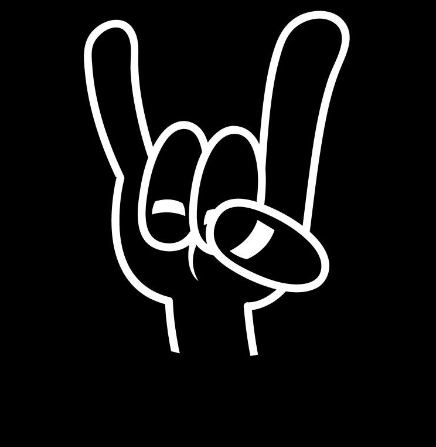

Home
About
Recipes
All Recipes
Greek Lentil Stew of Power
Pirate Easter Cheese Tarts
New Wave of Great Pea Stew (NWGPS)
"Bolognese": a cover
About

Welcome to my metal cookbook! Here you will find some of my favourite recipes, mostly pescatarian, vegetarian, or even vegan.
Why is it metal, you ask? Every recipe comes with its own little metal playlist to set the mood for your cooking.